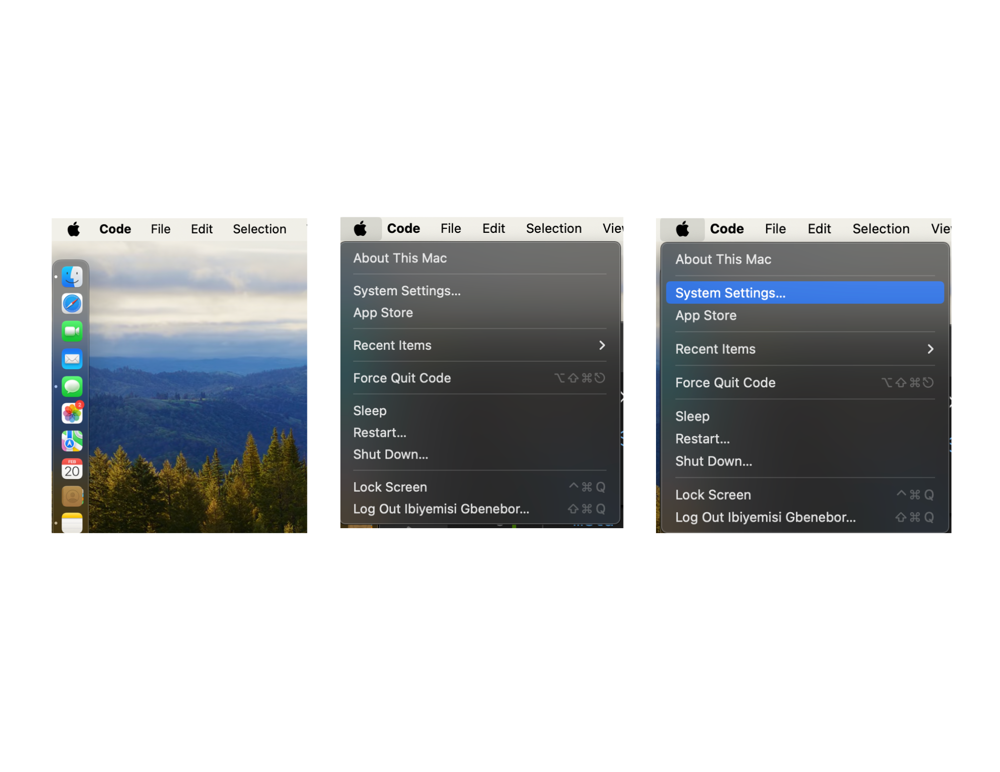
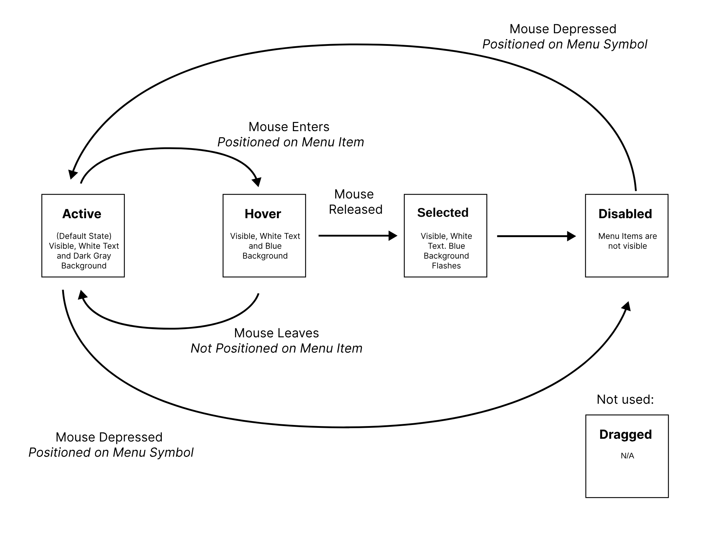
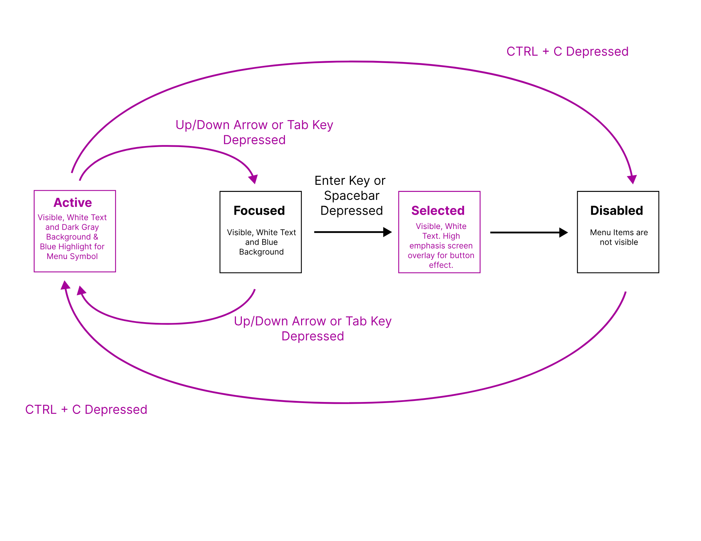

A dropdown menu is a fundamental UI component that enhances navigation by organizing options efficiently. However,
accessibility varies across implementations. This case study explores how dropdown menus function using mouse,
keyboard, and touch interactions, analyzing their usability and accessibility.
Initial Design
This section showcases the original dropdown menus from Google’s user profile menu, Apple’s system menu, and
ChatGPT’s interface.
By analyzing these designs, I identified key differences in interaction methods, accessibility features, and
usability trade-offs across platforms.
Google User Profile Menu

Apple System Menu
ChatGPT Dropdown Menu
Initial Design Insights
User Interaction
Initial State Model: Apple Menu
Below, you’ll see two separate state models, each focusing on mouse and keyboard interactions. These diagrams help us visualize how a user navigates through different states when using a dropdown menu.

Mouse
Keyboard
Updated State Model: Apple Menu
In this redesigned version of the dropdown menu, I’ve added a new state specifically for mouse users—they can now select text within the dropdown options. This additional feature allows users to copy and paste text from the menu, which enhances their ability to search and compare different options. This trade-off aims to improve learnability for mouse users, providing more control and flexibility. However, this new state lacks a similar feature for keyboard users, resulting in a loss of accessibility for those who rely on the keyboard alone. This adjustment highlights the balance between usability for mouse users and accessibility for keyboard users in the dropdown interaction model.
Mouse

Keyboard
New and Improved Dropdown Menu Design
Cupcake ipsum dolor. Sit amet marshmallow topping cheesecake muffin. Halvah croissant candy canes bonbon candy. Apple pie jelly beans topping carrot cake danish tart cake cheesecake. Muffin danish chocolate soufflé pastry icing bonbon oat cake. Powder cake jujubes oat cake. Lemon drops tootsie roll marshmallow halvah carrot cake.
Cupcake ipsum dolor. Sit amet marshmallow topping cheesecake muffin. Halvah croissant candy canes bonbon candy. Apple pie jelly beans topping carrot cake danish tart cake cheesecake. Muffin danish chocolate soufflé pastry icing bonbon oat cake. Powder cake jujubes oat cake. Lemon drops tootsie roll marshmallow halvah carrot cake.
New Design
Reflection
Cupcake ipsum dolor. Sit amet marshmallow topping cheesecake muffin. Halvah croissant candy canes bonbon candy. Apple pie jelly beans topping carrot cake danish tart cake cheesecake. Muffin danish chocolate soufflé pastry icing bonbon oat cake. Powder cake jujubes oat cake. Lemon drops tootsie roll marshmallow halvah carrot cake.
Cupcake ipsum dolor. Sit amet marshmallow topping cheesecake muffin. Halvah croissant candy canes bonbon candy. Apple pie jelly beans topping carrot cake danish tart cake cheesecake. Muffin danish chocolate soufflé pastry icing bonbon oat cake. Powder cake jujubes oat cake. Lemon drops tootsie roll marshmallow halvah carrot cake.